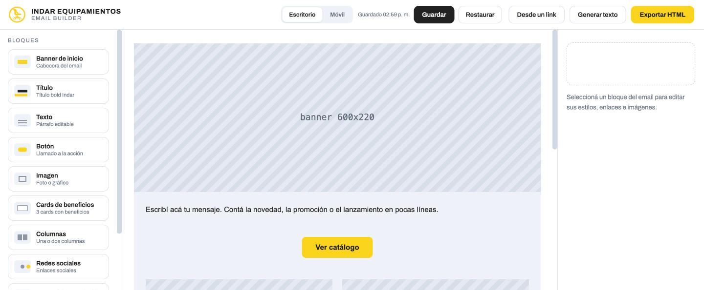
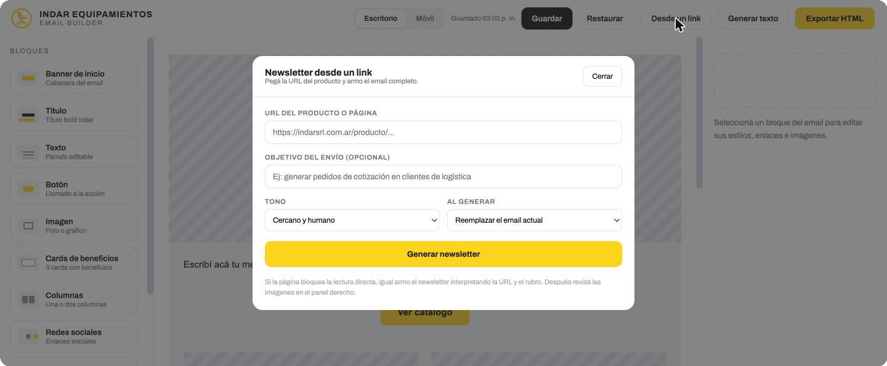
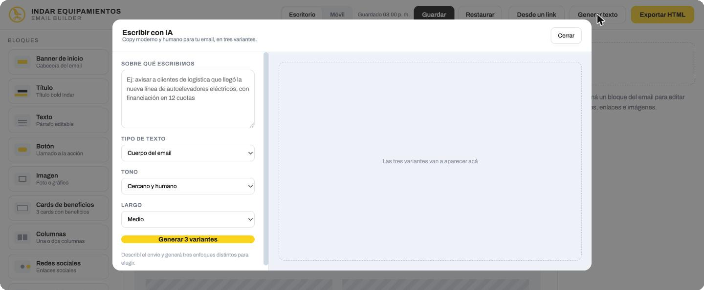
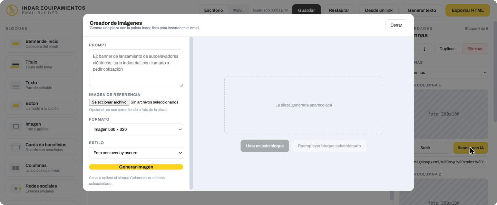

Indar's marketing team couldn't put together an on-brand email without pulling in me and our designer — and without hours of explaining what they needed. I designed and built them an internal tool that writes, styles and lays out campaigns on its own, so a newsletter no longer waits on either of us.El equipo de marketing de Indar no podía armar un email on-brand sin pasar por mí y por nuestra diseñadora — y sin horas de explicar qué necesitaban. Les diseñé y construí una herramienta interna que escribe, diseña y arma las campañas sola, para que un newsletter ya no dependa de ninguna de las dos.
Indar's team wanted to send newsletters on a regular basis — new stock, seasonal pushes, corporate offers — but nobody outside design could put one together. Every email meant handing a product or an idea to me, then to our designer, then waiting.El equipo de Indar quería mandar newsletters con regularidad — stock nuevo, campañas de temporada, ofertas corporativas — pero nadie fuera de diseño podía armar uno. Cada mail significaba pasarme un producto o una idea a mí, después a nuestra diseñadora, y esperar.
Most of that time wasn't spent designing — it was spent explaining: which products, which tone, which colors, which links. By the time the brief was clear, half the day was already gone.La mayor parte de ese tiempo no se iba en diseñar — se iba en explicar: qué productos, qué tono, qué colores, qué links. Para cuando el brief quedaba claro, ya se había ido medio día.
The bottleneck wasn't a lack of skill. It was that on-brand email production only lived in two people's heads.El cuello de botella no era falta de habilidad. Era que armar un email on-brand solo vivía en la cabeza de dos personas.
The builder reads the product page — copy, images, price — and lays it out as a ready-to-send campaign in Indar's format and voice. Pick a tone and whether it replaces or adds to what's already on the canvas, and it's done. No brief, no back-and-forth.El builder lee la página del producto — copy, imágenes, precio — y lo arma como una campaña lista para enviar, en el formato y la voz de Indar. Elegís un tono y si reemplaza o se suma a lo que ya hay en el lienzo, y listo. Sin brief, sin ida y vuelta.
Nine predefined blocks — banner, heading, text, button, image, benefit cards, columns, social links, footer — locked to Indar's palette and typography. Drag one onto the canvas, write the copy with AI in the tone you need, and for anything the catalogue doesn't have a photo for, generate a banner or image on the spot by picking a format and a style.Nueve bloques predefinidos — banner, título, texto, botón, imagen, cards de beneficios, columnas, redes sociales, footer — con la paleta y tipografía de Indar ya fijas. Arrastrás el que necesitás al lienzo, escribís el copy con IA en el tono que haga falta y, para lo que el catálogo no tiene fotografiado, generás un banner o imagen en el momento eligiendo formato y estilo.




I built the whole tool myself with Claude: from the first idea to a version the team could actually click through, tested with people at Indar before it went into daily use. No dev handoff, no external no-code platform — two working days from problem to working tool.Construí toda la herramienta yo sola con Claude: desde la primera idea hasta una versión que el equipo pudo probar de verdad, testeada con gente de Indar antes de pasar a uso diario. Sin pasarlo a desarrollo, sin plataforma no-code externa — dos días hábiles del problema a la herramienta funcionando.
Newsletters no longer wait on a designer's calendar or on me repeating the same brief. The team builds a campaign — on-brand by default — from a product link or from scratch, and sends it without opening a request for design.Los newsletters ya no esperan la agenda de una diseñadora ni a que yo repita el mismo brief. El equipo arma una campaña — on-brand por default — desde un link de producto o desde cero, y la manda sin abrir un pedido para diseño.